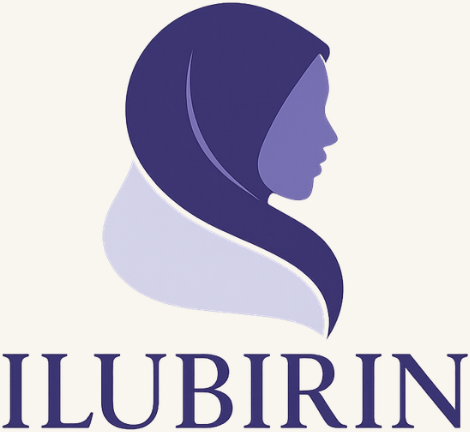

You don’t have to
do this alone.
Inner Healing CircleCOHORT 3
A 12-week facilitated sisterhood for Muslim women.
Space to reconnect with yourself, Allah and healthier ways of relating.
STARTS
Thursday 8 October 2026 • 8pm
SESSIONS
12 weekly sessions
PRICE
£150 total
PAYMENT OPTIONS
Pay £150 once or £50 every four weeks × 3
Come as you are. No forced disclosure.
Facilitated sisterhood — not group counselling.
Message CIRCLE to ask about joining
ilubirin.com | @ilubirin.healing

Faith. Sisterhood. Emotional Liberation.